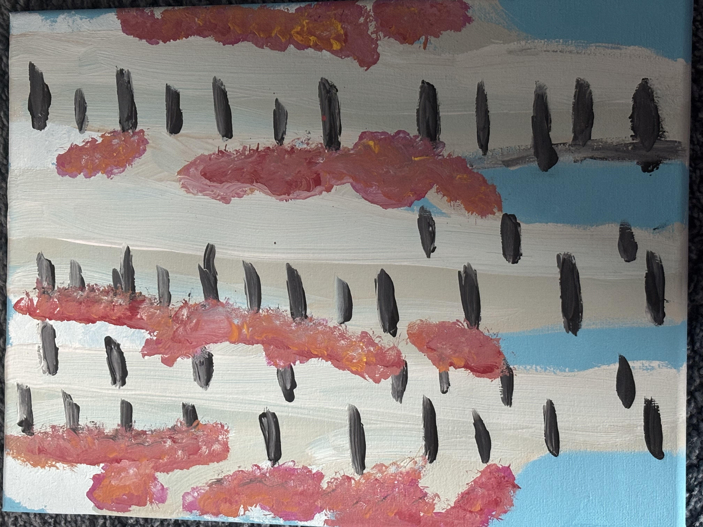
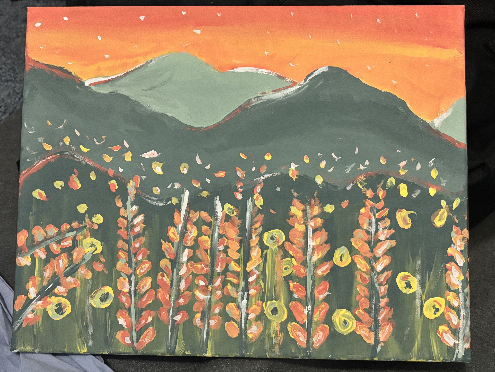

Paintings

Painting was another type of art I wanted to learn. At first, I thought it would be easy, such as easy strokes painting inside the lines, but I was wrong. Painting can be complex and difficult if you don’t follow simple steps. This painting was the first painting I did at a community event. I was thrilled to try something new and in my type of field. Little did I know this was not going to be easy, but I’m always ready for a challenge. We started with simple strokes and created what you would call bamboo trees and bushes. Unfortunately, I made a mistake and did not make lighter strokes, in addition to using bigger strokes.
In the end, this painting was a lesson to learn, and Im glad I tried what I enjoyed instead of avoiding it altogether.

Painting was another type of art I wanted to learn. At first, I thought it would be easy, such as easy strokes painting inside the lines, but I was wrong. Painting can be complex and difficult if you don’t follow simple steps. This painting was the first painting I did at a community event. I was thrilled to try something new and in my type of field. Little did I know this was not going to be easy,
but Im always ready for a challenge. We started with simple strokes and created what you would call bamboo trees and bushes. Unfortunately, I made a mistake and did not make lighter strokes, in addition to using bigger strokes. In the end, this painting was a lesson to learn, and I’m glad I tried what I enjoyed instead of avoiding it altogether.